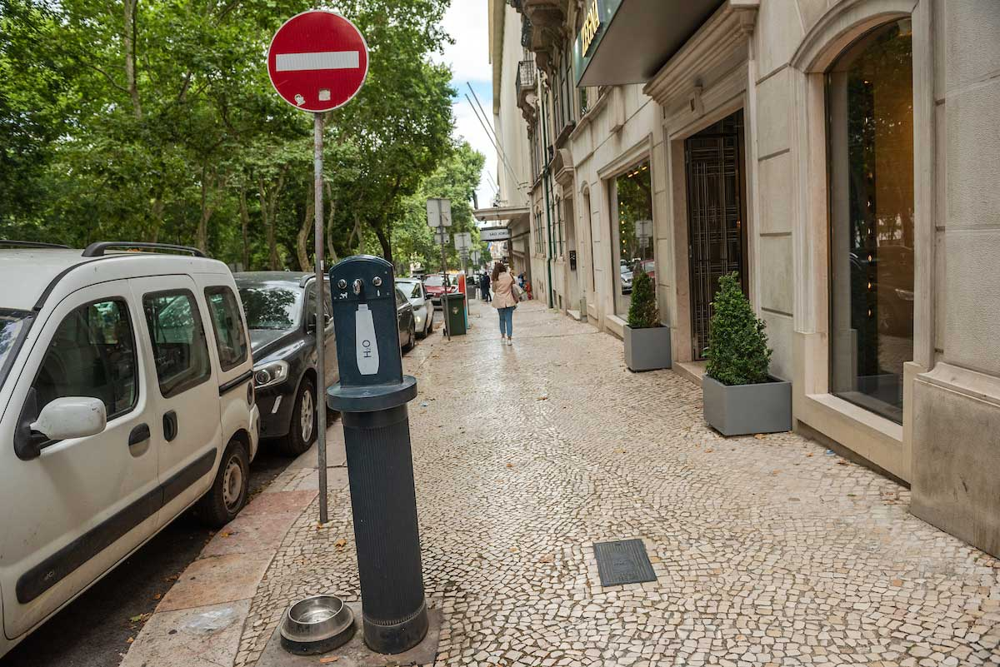
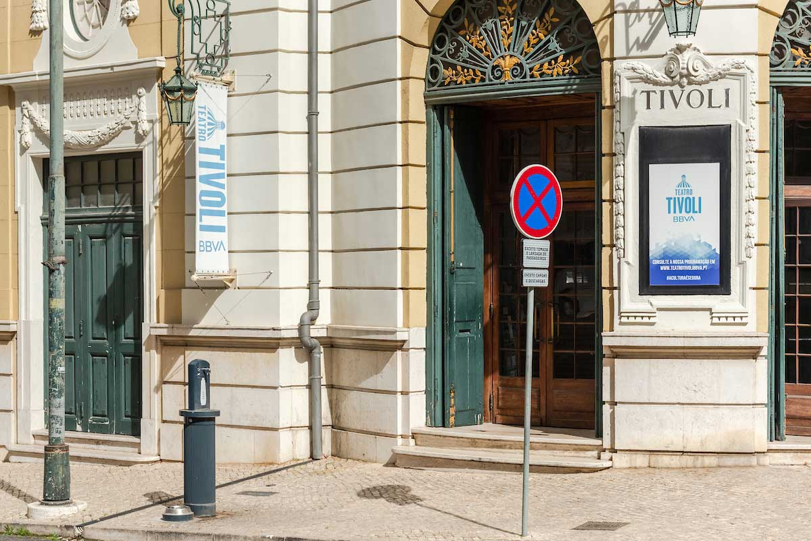
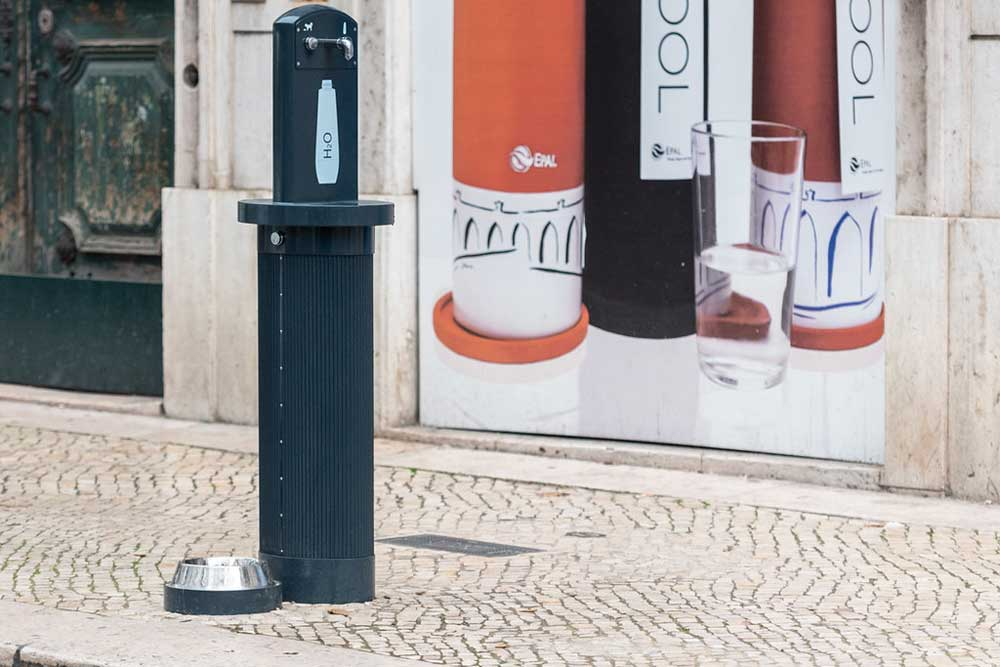
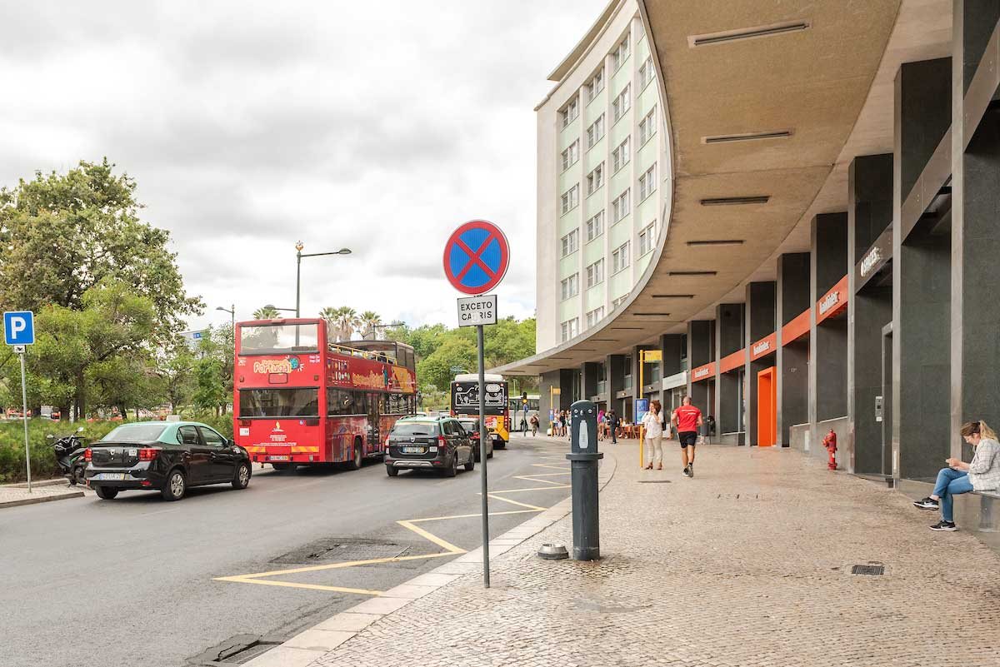
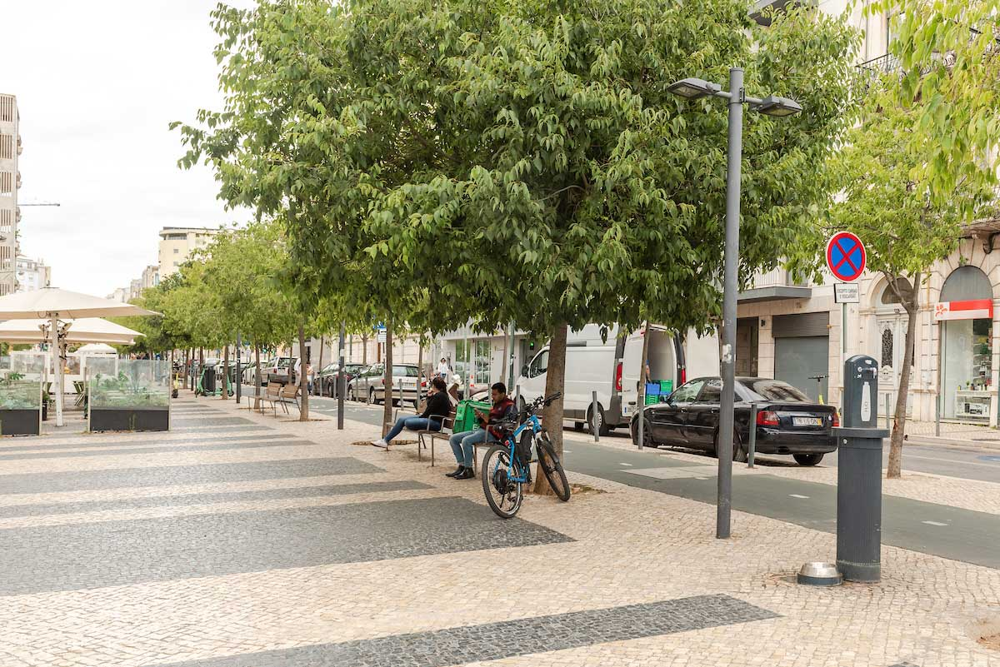
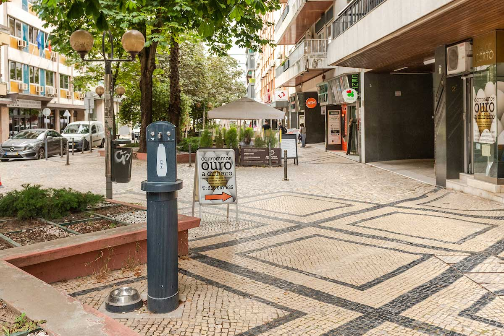
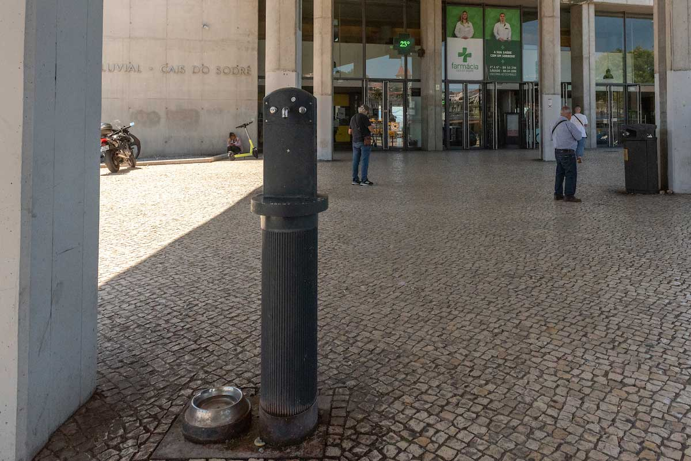
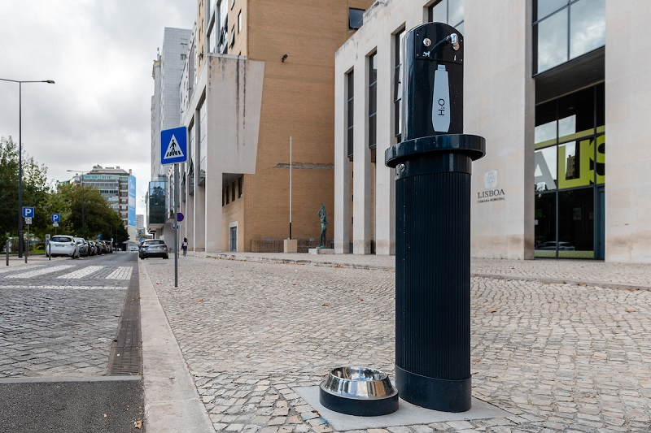
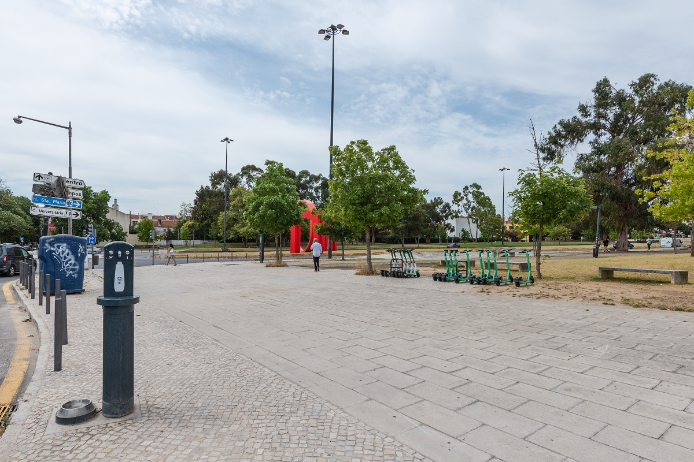

Bebedouros
de Lisboa
Missão
Sobre

Bebedouro Av. Liberdade (São Jorge)

Bebedouro Av. Liberdade (Tivoli)

Bebedouro Av. Liberdade (EPAL)

Bebedouro Av. Liberdade (Marquês de Pombal)

Bebedouro Av. República / Av. Duque de Ávila

Bebedouro Av. Julio Dinis

Bebedouro Cais do Sodré

Bebedouro Av. Julio Dinis

Bebedouro Campo Grande (Cidade Universitária)